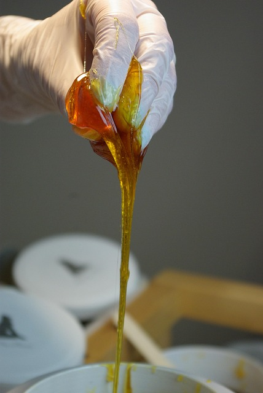

JOURNAL Saúde da pele
Vermelhidão persistente: quando observar e quando investigar
Vermelhidão persistente parece uma questão simples quando aparece em uma busca. Na prática, vermelhidão facial pede contexto: histórico, rotina, condição atual da pele e objetivos ajudam a organizar uma decisão mais segura.

Comece pelo contexto
Antes de procurar uma solução pronta, vale olhar para os sinais que tornam a conversa mais precisa. Essa observação não substitui uma avaliação, mas torna as perguntas mais úteis e evita que uma tendência defina sozinha o próximo passo.
A técnica vem depois da pergunta
Em estética, a mesma queixa pode ter prioridades diferentes conforme a pessoa. Uma consulta responsável explica possibilidades, preparação, limites e recuperação antes de indicar um recurso ou uma sequência de sessões.
O que vale observar na rotina
Anotar mudanças, produtos em uso, exposição solar, desconfortos e o tempo de evolução ajuda a transformar uma impressão em uma conversa mais precisa. O objetivo não é chegar com um diagnóstico, e sim com informações úteis para a avaliação.
Segurança também é saber esperar
Sintomas oculares, dor ou piora importante exigem avaliação médica. Se houver dúvida, a orientação da profissional que avaliou o caso deve prevalecer sobre comparações, receitas caseiras ou expectativas construídas por imagens online.
Como a consulta organiza o próximo passo
Em Londrina, a consulta permite entender se vermelhidão facial pede cuidado estético, preparo prévio, acompanhamento, tempo de observação ou outro encaminhamento. Uma recomendação responsável pode incluir tratar, ajustar ou simplesmente esperar.
Referências
As fontes abaixo apoiam uma conversa responsável. Elas não substituem avaliação presencial, diagnóstico ou orientação individual.
Próximo passo